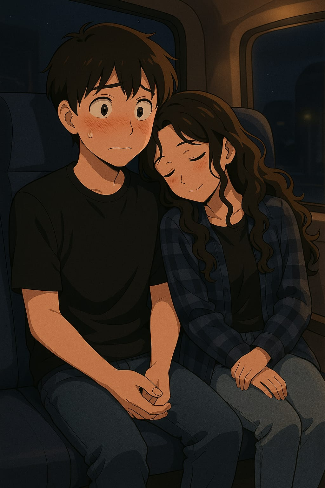
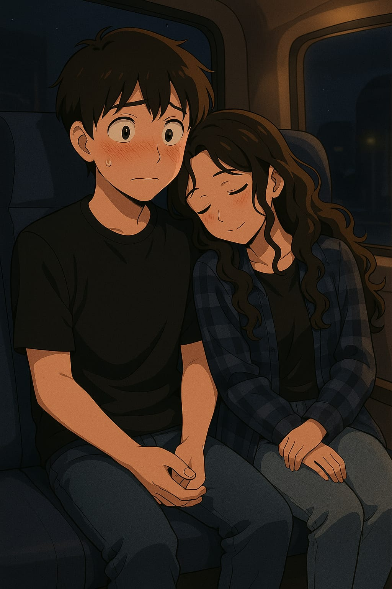
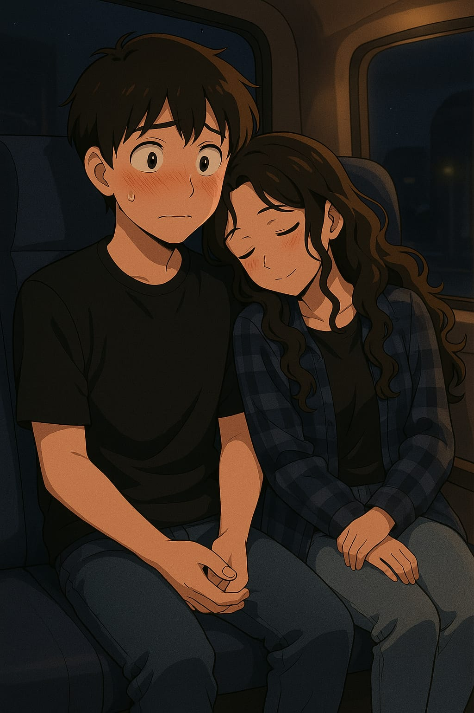

Alice, você é o motivo do meu sorriso, a paz no meu caos e a luz dos meus dias.
Cada momento contigo é único, e esse site é só uma pequena forma de mostrar o quanto você significa pra mim.

"Se eu tivesse que escolher entre te amar e respirar... usaria meu último suspiro pra dizer que te amo."